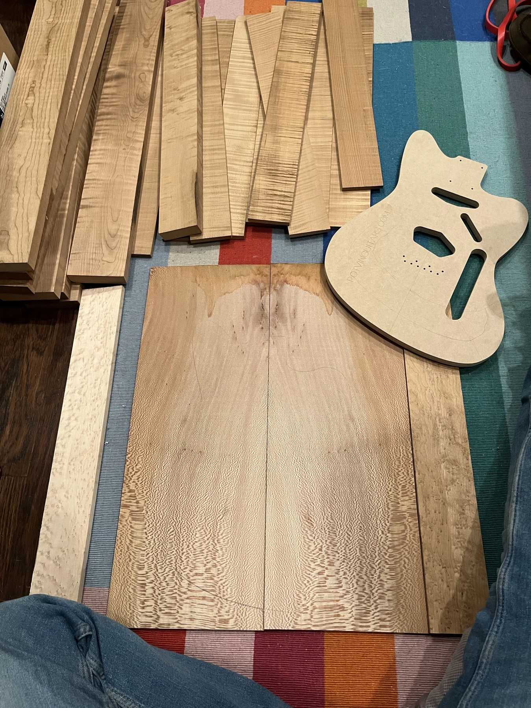

03 / Material study
Before the first string
Roasted flame maple, neck blanks, and a routed body. An instrument begins as a collection of parts.

- Study
- Materials and preparation
- Archive caption
- Roasted flame maple
- On the bench
- Wood stock and a routed body
- View
- Work in progress
There is a lot of instrument here already.
A body profile sits beside boards and narrower blanks. The shapes are at different stages, but the relationships are becoming visible: long pieces for neck work, broad surfaces, and pockets routed into the body.
Material preparation belongs in the story alongside the finished instrument. It is where the work takes shape, before hardware, strings, and the final adjustments.
Ask about the work